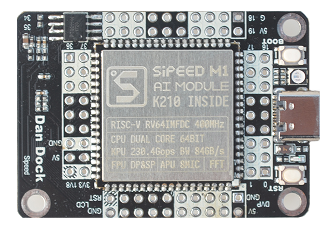
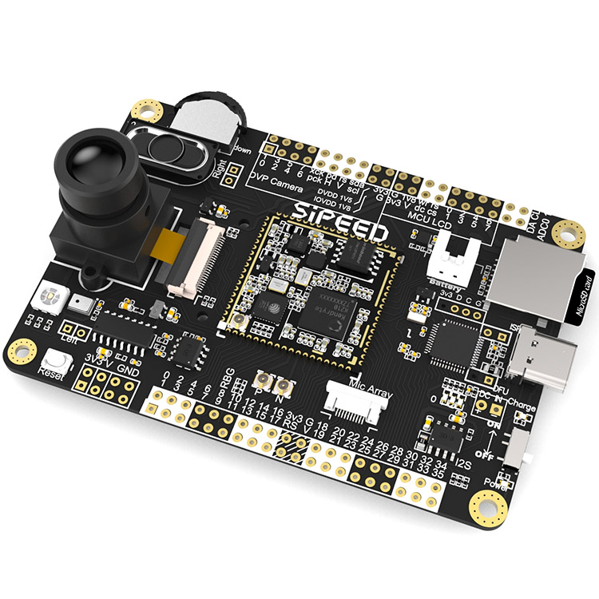

MaixPy Documentation
1. What is MaixPy
MaixPy ported Micropython to K210 (a 64-bit dual-core RISC-V CPU with hardware FPU and convolution accelerator). A project that supports MCU routine operations and integrates machine vision and microphone arrays to quickly develop intelligent applications in the AIOT field that are extremely cost effective and practical.
MicroPython is a lean and efficient implementation of the Python 3 programming language that includes a small subset of the Python standard library and is optimised to run on microcontrollers and in constrained environments.
K210 created for AIOT(AI+IOT) use, It's powerful performance and low cost are very competitive.
Micropython makes programming on K210 hardware easier, the code is open source and can be found on GitHub)
For example if we want to find an I2C device, we just need this code:
from machine import I2C
i2c = I2C(I2C.I2C0, freq=100000, scl=28, sda=29)
devices = i2c.scan()
print(devices)
Again, if we want to make a breathing light using PWM, we just need this code:
from machine import Timer,PWM
import time
tim = Timer(Timer.TIMER0, Timer.CHANNEL0, mode=Timer.MODE_PWM)
ch = PWM(tim, freq=500000, duty=50, pin=board_info.LED_G)
duty=0
dir = True
while True:
if dir:
duty += 10
else:
duty -= 10
if duty>100:
duty = 100
dir = False
elif duty<0:
duty = 0
dir = True
time.sleep(0.05)
ch.duty(duty)
To take a picture：
import sensor
import image
import lcd
lcd.init()
sensor.reset()
sensor.set_pixformat(sensor.RGB565)
sensor.set_framesize(sensor.QVGA)
sensor.run(1)
while True:
img=sensor.snapshot()
lcd.display(img)
2. About this documentation
Everything related to MaixPy, mainly about
- How to choose and get a suitable module/development board
- How to get started with MaixPy, even if you are not an expert in hardware programming.
- Learn MicroPython language basics
- Libraries (API) reference
3. Let's get started
First of all, we need to choose a development board that suits your needs. The following ones are currently available:
- Dan dock with Sipeed M1(Dan) module
k.png)
- Sipeed Maix BiT

- Sipeed Maix Go

- Sipeed Maixduino

To get any of those boards, visit Sipeed Official Website
More hardware infomation here
We can now start writing software, refer to get started
4. Video tutorial
This video will briefly introduce the basics to get started. To get more in-depth, please check the documentation.
5. MaixPy source code
If you want to participate in the development of MaixPy's built in features, you can download the source code and do a pull request.
MaixPy source is hosted on GitHub
| Branch | Status |
|---|---|
| master |  |
This project was started by ©Sipeed Co.,Ltd. and accepts contributions from the open source community. You can see who contributed by checking the list of contributors
6. Source code of MaixPy documentation
Doumentation will be edited if the API code is changed.
The source of the documentation can be found on GitHub
You MUST read the documentation convention before editing it!
| Branch | Status |
|---|---|
| master |  |
| dev |  |